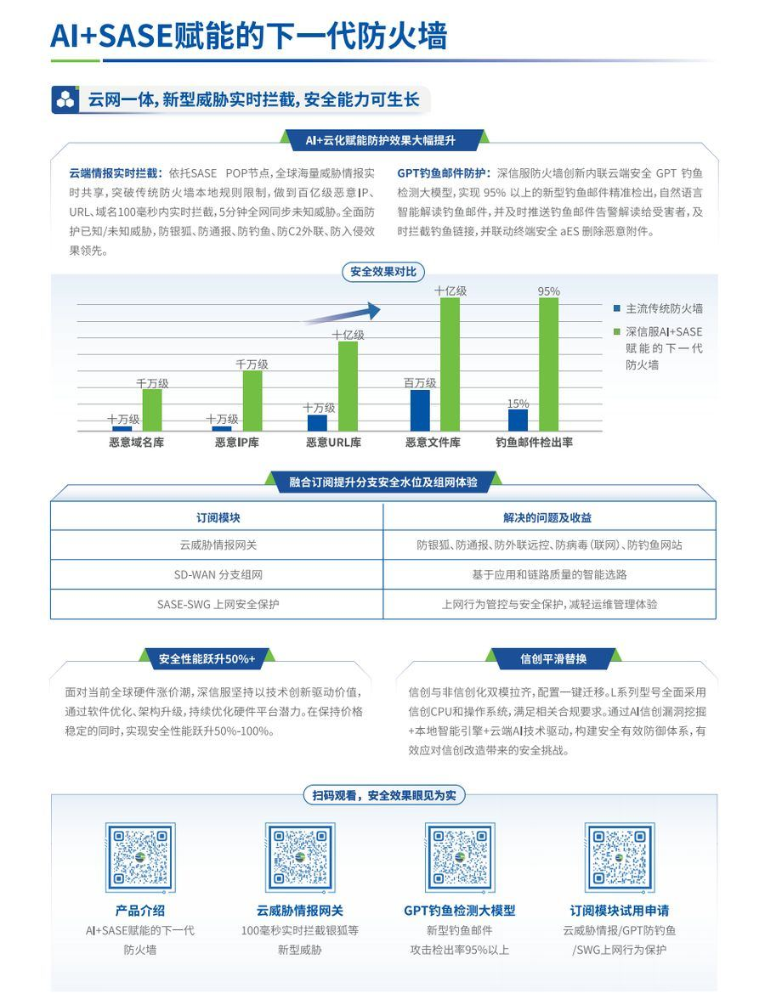
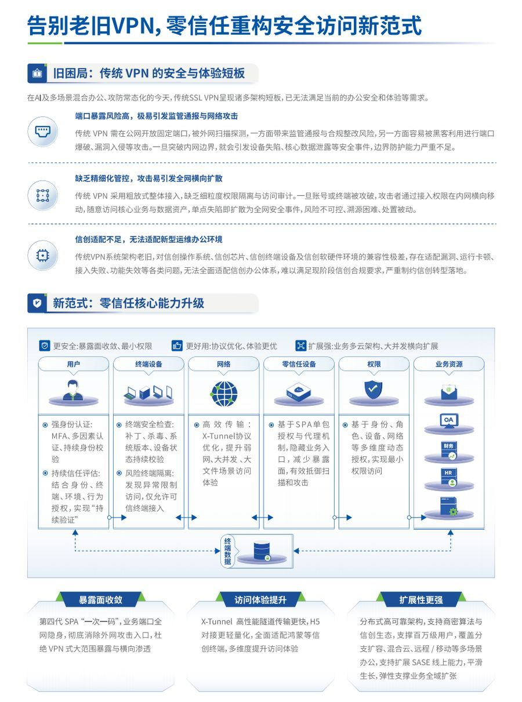
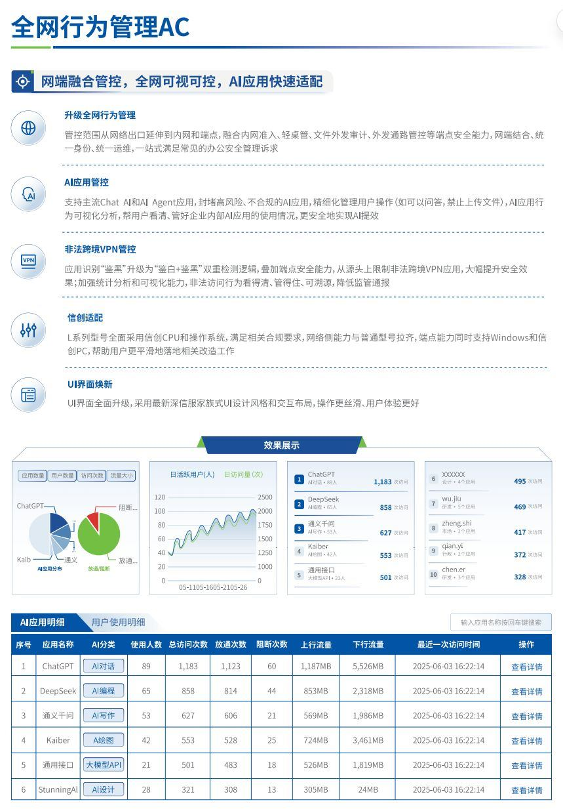
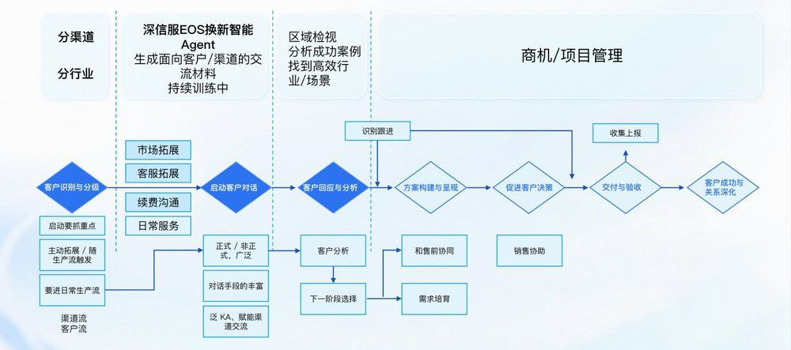
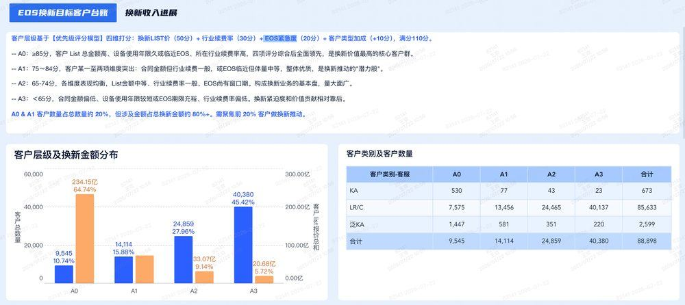

基于全国20+区域真实案例调研 · 数据驱动 · 方法论可复制 · 让一线有武器
设备服役7年+，硬盘/电源/风扇老化率陡增，一旦故障无法修复，业务中断风险极大。
安全规则库、漏洞补丁、病毒特征库停止更新，面对勒索病毒、0day攻击毫无防御能力。
等保2.0、行业监管明确要求设备需在厂商支持周期内。EOS设备面临通报、整改甚至关停风险。
新设备性能提升3-5倍，故障率归零，自动化运维减少人工投入，IT团队工作量降低30-50%。
AI赋能威胁识别，规则库持续更新，安全能力可生长而非一次性投入，业务连续性全面保障。
等保2.0一次通过，监管检查无忧。威胁拦截率从60%→99.9%，安全事件响应从小时级→秒级。
云网一体，新型威胁实时拦截，安全能力可生长

从"边界安全"到"持续验证"，体验更优、权限更细、扩容更强

网络策略全域管控，全网可视可控，智能识别新应用

从客户识别到关系深化，每个阶段该做什么、用什么工具、盯什么时间窗口


👆 iCare【EOS换新商机看板】示意图从20份一线成功案例中提炼的8条可复制规律 ↓
TOP3触达场景：日常巡检（45%）、续保谈判（50%）、故障报修（20%）。日常服务是商机挖掘的最大金矿。
高频动作90%案例中提及【风险警示 + 维保vs换新成本对比 + 同行案例】的组合说服方式。
核心方法论① EOS后无维保无备件风险（55%）② 换新vs维保成本对比（40%）③ 同行业案例参照（25%）
话术方向年度预算规划窗口（65%）+ 维保到期续费（70%）+ 等保测评/上级检查（25%）= 三重黄金触发点。
时机选择VPN不再维护是在保设备换新的最大驱动力（40%案例提及），信创改造强制要求紧随其后（30%）。
在保换新75%案例中，一线提供了「EOS风险说明+换新立项方案+新产品价值说明」帮客户向领导汇报。
关键助攻85%案例提到「及时获取换新商机并拉通渠道」，70%案例提到「高频次服务触点+风险告知」。
协作模式政策传递是当前的明显短板。一线应主动告知优惠（如AF老客户购买订阅型号享80%优惠），而非等客户问。
立即行动背后真实顾虑：没感知到风险 · 不想多花钱 · 担心换新后出问题
背后真实顾虑：确实没预算 · 优先级不够 · 试探是否有更低价格
背后真实顾虑：风险感知不强烈 · 没有内部推动力 · 预算还没开始规划
背后真实顾虑：价格敏感 · 在货比三家 · 可能被竞品接触过
背后真实顾虑：担心业务中断 · 运维团队人力不足 · 担心迁移风险
背后真实顾虑：确实不了解政策 · 觉得优惠力度不够 · 政策宣传不到位
按行业场景+产品线拆分，含开场痛点切入+换新价值拆解+数据对比+ROI测算，可直接替换客户名称参数使用
不同角色的关注点完全不同——对的人说对的话，事半功倍
关注重点：设备稳定性 · 日常运维工作量 · 安全漏洞修复 · 故障后追责
最佳触达方式：日常巡检（最自然）· 月度培训（深度触达）· 故障时顺势沟通
核心话术：「您的设备规则库已停更X个月——X个已知高危漏洞无法修复。如果发生安全事件，追责首先是运维团队。」
关键动作：帮运维准备向上汇报材料，让他们"有底气去跟领导要预算"
覆盖：70%案例涉及
关注重点：业务连续性 · 合规风险 · IT投资回报率 · 行业对标
最佳触达方式：正式邮件（官方背书）· 高层拜访 · 行业对标案例
核心话术：「贵司设备已服役X年且进入EOS。同行客户通常在第6年滚动换新——故障率和安全风险在第7-8年会急剧上升。」
关键动作：提供"行业对标报告"——同行业XX家已完成换新，附脱敏名单和时间线
覆盖：35%案例涉及
关注重点：价格 · 流程合规性 · 招投标要求 · 供应商资质
最佳触达方式：提供完整采购技术规格书 · 竞品对比分析表 · EOS换新合规性说明
核心话术：「这次换新不是普通采购，而是EOS设备风险处置——(金融客户)可能触发监管合规问题。我们提供完整采购技术支撑材料。」
关键动作：提供《EOS换新采购合规说明》——解释为什么必须换新而非续保
覆盖：30%案例涉及
关注重点：组织风险 · 重大事故责任 · 整体预算 · 行业声誉
最佳触达方式：官方邮件（LZS模式★）· 正式函件（EOS风险告知函）· 安全事件案例警示
核心话术（邮件）：「尊敬的XX主任：贵院使用的深信服XX设备将于XX年XX月进入EOS阶段。届时将停止安全规则库更新、硬件备件供应、技术维保服务——考虑到设备承载HIS/电子病历等核心业务，建议提前启动换新计划。」
关键动作：发完邮件后安排正式拜访，让领导"看到人、看到方案、看到代价"
★★★★★ LZS模式核心
以下两个案例均为真实 EOS 换新项目：案例一为伙伴凯远与深信服联合作战，案例二为浙江区自主打法的完整拆解（贡献人：田孜博 / 林毅斌）。两者均涵盖作战过程、关键步骤拆解及可复制方法论沉淀。
互联网企业客户180+台设备存量，75台WOC已EOS——伙伴凯远与深信服原厂铁三角协同，从"设备老了该换"升级为"整体网络架构能力升级"，实现从单次销售到长期安全体系建设合作的价值跃迁。
EOS政策推出后，凯远作为深信服核心合作伙伴，立马协同原厂向客户推广传递EOS政策，但在梳理客户资产时发现，多家老客户的AF/AC设备已进入EOS状态，客户决策层并无换新紧迫感。伙伴在前期沟通中只能谈"设备老了该换"，被客户以"预算不足""还能用"为由搁置，陷入低价竞争僵局。
主要困境：
客户画像：互联网企业客户，在用深信服设备180+台（WOC、AF、SSL VPN、AC），其中75台WOC、40+台AC已EOS或接近EOS，每年都会持续续费。
客户原先分支组网：传统WOC架构，各分支跟总部只是单纯组网，无其他能力。若只是引导设备换新，客户无其他驱动力，且有第三方（某为）竞争的风险。前期推动EOS换新进展很慢，未有效推动。
EOS换新风险：
因预算吃紧，客户首批只采购了12台AF设备替换原先WOC。交付团队在交付期间严格按照"价值交付"要求，完成新旧设备的平滑割接与策略迁移，保障业务零中断，赢得了客户对深信服和凯远对本次方案的深度信任。
凯远收益：
客户签订后续框架，为后续EOS设备替换埋下持续增购伏笔。实现了从"单次设备销售"向"长期安全体系建设合作"的价值跃迁。
客户收益：
客户各分支安全防护能力提升，技术创造业务价值。
凯远以"产品交付转向价值交付"后，在其他EOS换新场景中持续带来收益：
| 核心要素 | 具体做法 | 为什么关键 | 可复制性 |
|---|---|---|---|
| 市场铁三角（销售、售前、售后）配合攻坚 | 客服：讲痛点风险，WOC EOS后备件、响应变差，从运维角度证实业务风险；售前：讲替换方案价值，输出AF替换方案，解决性能不足、补齐安全防护；销售：商务层面推动立项，面向高层把技术问题转化为管理风险、合规风险、业务连续性风险 | 铁三角协同、环环相扣，更高效 | ★★★★★ 适用于所有行业 |
| 提前布局，在预算前传递风险 | 推动高层知晓设备EOS风险；客户预算情况需要持续跟进 | 客户一旦预算落定就很难追加——必须在"钱还没花"之前让客户知道"这笔钱必须花" | ★★★★★ 适用于所有行业 |
| EOS风险场景化，不是讲政策是讲整体网络架构怎么升级 | "产品交付"转变为"价值交付" | 价值驱动 > 政策驱动，要让客户感知额外换新价值点 | ★★★★ 根据不同行业定制业务场景 |
| 持续服务好，才能让客户持续感知产品价值 | 数智化服务平台服务通路传递、客户服务体验升级、感知更好 | 客户使用产品持续满意、增购意愿才会大大加强 | ★★★★★ 适用于所有有续保谈判的客户 |
| 厂商与伙伴经营会要持续 | 月度经营会（着重标记下一步待办），输出文字记录同步伙伴、原厂各层级关键人 | 协同配合，解决伙伴能力、意愿问题，共同制胜 | ★★★★★ 适用于所有行业 |
| 厂商跟伙伴一定要梳理清客户设备 | 厂商提供具体EOS设备清单；伙伴客户台账能确定设备具体应用在客户什么场景，对客户的重要程度 | 深信服给的只是设备本身信息，但客户不清楚设备在客户侧究竟发挥什么作用；代理商清楚；互相合作才能推广 | ★★★★★ 适用于所有行业 |
📮 案例贡献
感谢上海区张栋栋/张绍芬案例贡献。后续有案例分享可反馈至王欢 82141。
两个真实案例（政府 / 教育），单笔均达 20 万量级。这套打法最值得全国复制的不是话术，而是把「技术问题」翻译成「业务影响 + 换新价值」的有效推动链路——服务团队负责发现与举证，渠道负责商务与报价，市场负责政策窗口与资源。
| 维度 | 案例A：XX 市气象局（政府） | 案例B：XX 学院（教育） |
|---|---|---|
| 打法路径 | 业务窗口驱动：借专项工程 XDR 预算倒逼配套设备换新 | 售后痛点驱动：用真实工单数据证明「修不如换」 |
| 天然切入点 | 月度巡检 + 「XDR 业务对接需求启动会」 | 售后报修处理现场（顺手梳理近半年工单） |
| 核心论证 | 旧 AF / SIP 版本接不进 XDR，新业务带不动老设备 | 半年 6 次同类工单：3 次规则库漏判、2 次版本受限、1 次硬件断网 |
| 金额 / 周期 | 20万级；1 月提出 → 6 月签单，约 4-5 个月 | 20-30万级；3 月接触 → 9 月签单，约 5-6 个月 |
| 带动产品线 | aTrust / AF / SIP（XDR 联动一次性带起多线） | AC / AF / VPN / AD（信创 + 零信任升级） |
开场切入：「这次月度巡检我们提前把所有安全设备的档案信息整理了一遍，包括购买日期、维保到期时间、当前版本和部署位置。发现有几台设备已经 EOS 了，还有几台很久没有续费或已经不支持续费，导致规则库停更很久了。今天想跟您一起过一遍，看看哪些设备需要重点关注。」
呈现台账：「您这台 AF 是 2019 年购买的，维保去年就到期了，版本还停在 8.0.x。这台 VPN 已经停止服务了，我们把这些设备标红了，方便您内部对齐时一眼看到风险。」
引导换新（关键：不要求全换）：「我们不是让您一次全换，而是先梳理清楚哪些必须换、哪些还能续保。能续保的续保，已退市或高风险的优先换。这样您内部申请预算也有依据。」
客户说「没预算」时，浙江区没有降价，也没有逼单，而是分四步把「大额一次性决策」拆开：
| 障碍 | 常规做法 | 浙江区做法 | 为什么有效 |
|---|---|---|---|
| 没预算科目 | 反复催客户立项 | 换科目，不换总额：塞进 XDR 专项 / 专项工程 / 护网整改 / 信创改造 | 钱不从「安全设备运维」出，审批路径换了，阻力自然变小 |
| 金额太大 | 死守一次性全换 | 给分期，不给「换 / 不换」二选一：先换故障频发的 AD、VPN，再换 AF、AC，两年规划分步实施 | 决策从「一笔大钱」变成「一小步」，客户的心理责任门槛被拆掉了 |
| 不肯为「旧」付钱 | 讲性能、讲参数 | 算运维账：一次故障停机 2 小时影响教学；换新后 3 年维保、工单大减；无保设备返厂没配件 | 从「这钱值不值」变成「不花的代价更大」 |
| 技术说服力不够 | 反复上门 | 把责任上移：漏判数据不形成安全日志，出了事查不到；等保测评列不符合项，影响学校考核 | 领导怕的不是花钱，是担责 |
| # | 优秀实践动作 | 对应效果 |
|---|---|---|
| 1 | 拜访前基于 EOS 看板导出全量清单：购买日期、维保到期、当前版本、部署位置，EOS 设备标红 | 带着结论上门，沟通有据可依，客户内部对齐时一眼看到风险 |
| 2 | 从不单独推 EOS，全靠客户自己的业务需求引出 | 客户自己得出「该换」的结论，推动阻力最小，不是被动接受推销 |
| 3 | 证据全用可验证数据：CPU 长期 70%、IPS 库停在去年 3 月、半年 6 次工单中 3 次漏判 | 用具体数字和时间戳替代主观判断，把「设备老」变成「风险确凿」 |
| 4 | 预算编制前 6 个月就介入，帮客户做设备清单、性能参数、部署架构 | 客户可直接拿去做内部申报和领导汇报，预算落地概率显著提升 |
| 5 | 提供三套方案让客户选：全面换新 / 分期换新 / 维保 + 部分换新 | 客户掌握选择权，不再是被逼单；分期方案让大额决策拆成可执行小步 |
| 6 | 一线备好汇报材料，打向分管领导 | 从「只跟运维聊」变成帮客户做内部沟通，技术问题成功升级为管理问题 |
| 7 | 原厂侧 + 渠道侧双线闭环，责任到人 + 节奏固定 | 体系化推进不遗漏，前线发现的商机不会因为交接断点流失 |
EOS 换新不是一个部门能闭环的事。服务团队掌握「设备事实」和「客户信任」，渠道掌握「商务关系」和「报价能力」，市场掌握「政策窗口」和「资源审批」——三方各有一段不可替代的能力，缺一段商机就断在这里。
配套三条支撑机制：① 周会对齐拜访计划（销售/技服/售前 weekly 对齐，技服主动把客户资产情况同步给销售侧）；② 分产品 + 分存量双维度铺开（销售按产品推进、技服/售前按存量分级，明确到具体个人，避免「大家都负责 = 都没人负责」）；③ 借预警修复自然切入（以 VPN / AF / AC 预警修复为契机，同步使用风险并引导 SSL VPN 整体换为零信任）。
客户预算有限时的分工要点：服务团队给「事实」，渠道给「分期方案」，销售给「预算口子」——三方合力把「一次大额决策」拆成「两年分步实施」，客户才有拍板的空间。换新原则始终一致：能续保则续保，已退市或高风险设备优先换新；借 XDR 联动等新能力带动多设备同步换新，放大单点商机。
这套打法依赖三个前提：预算制 + 等保/合规压力 + 专项项目窗口。政府 / 教育客户适配度高；如果是纯商业客户、等保压力弱、也没有专项窗口，则需要把第③ 步的「业务绑定」换成「业务成本 + 体验升级」来切入。
📮 案例贡献
本案例由浙江区 田孜博 / 林毅斌 贡献，完整版拆解（含三方协同机制、话术原文、动作清单）见 独立案例页面。欢迎各区域结合本地实际复用，落地反馈回传以便持续迭代。
17项可执行标准动作，打印贴在工位，逐项打勾 ✓
以下工具可直接下载使用——覆盖从首次触达到商务落地的全流程。点击按钮可跳转至内部资源库获取（仅内部员工可访问）。